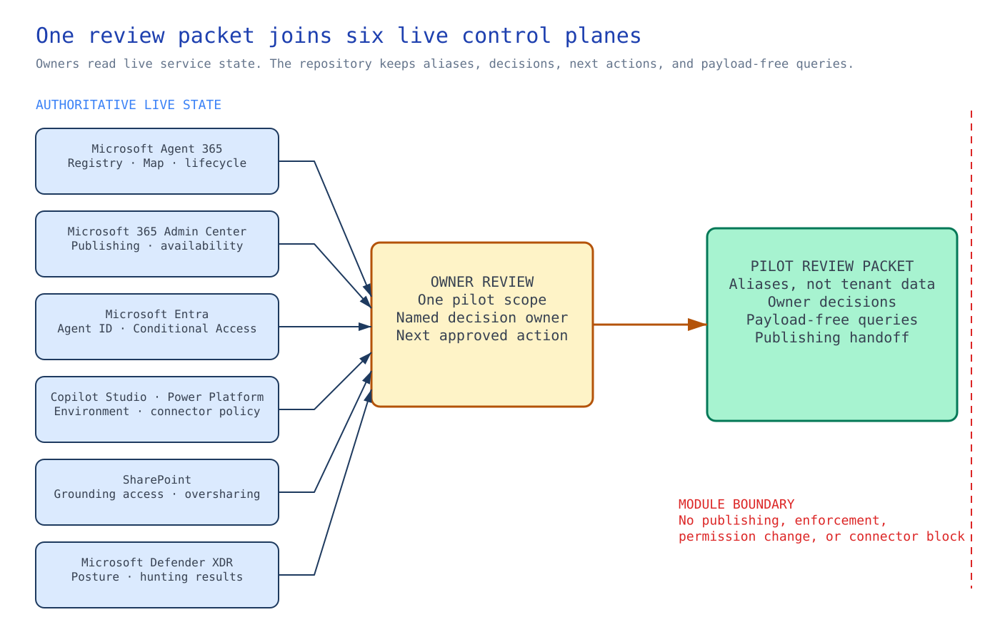

Chapter 2 of 6
Architecture at a glance#

No single Microsoft 365 admin surface can answer every governance question about an agent. This module gives the existing service owners one review path for a single nonproduction agent or agent family. It adds no new control plane. Each owner still inspects the part of the pilot that their service governs.
The review follows the agent across the service boundaries. Agent 365 shows its registry entry and Agent Map. Microsoft 365 Admin Center shows publishing and availability, while Microsoft Entra holds the Agent ID and Conditional Access state. Copilot Studio and Power Platform report the environment route and connector policy. SharePoint controls access to grounding sources. Defender XDR supplies the security posture and hunting results.
The live services remain the source for current state. The repository packet connects their aliases and owner decisions, including who acts next, and stores payload-free hunting queries. Preflight can check whether that packet is complete. It cannot read the tenant or prove that an owner's portal review is still current.
The publishing approver uses the packet to decide whether work should move to a separate, approved change path. This module stops before that change. It cannot publish the agent, enforce Conditional Access, alter SharePoint permissions, or block a connector.
Design choices and tradeoffs#
| Choice engineers need to make | Route used here | Why this route fits | What the team accepts | Change course when |
|---|---|---|---|---|
| How should owners inspect the pilot? | Review the live admin surfaces they own | Each decision comes from the service that holds the state, without brittle portal automation | Owners need access and must review current state; preflight cannot detect tenant drift | Supported APIs expose the required state with stable semantics |
| What belongs in the repository? | An alias-based review packet with no tenant or user data | The packet assigns decisions and next actions without copying live records | It cannot reconstruct tenant state or replace service records | An approved private system can retain governed identifiers |
| When should Conditional Access block access? | Record the Agent ID policy decision in report-only mode | The identity owner can inspect the expected effect first | This module does not block access | The identity owner approves a separate enforcement change |
| How narrowly should connector access be set? | Default-deny at action level where Advanced Connector Policies support it | The owner can restrict specific actions instead of classifying only the whole connector | Coverage depends on the tenant and connector | The platform provides a stronger approved policy route |
Architecture guidance#
Use the Microsoft Agent 365 overview to establish what Agent Registry and Agent Map can tell the Agent 365 administrator about this pilot. The inventory record then captures the alias, owner, sponsor, and lifecycle decision. It points back to Agent 365 rather than copying the live registry.
The publishing checklist connects that inventory to the availability decision. The approver checks current state and the restore path in Microsoft 365 Admin Center agent management. Connector and MCP action decisions go into the connector matrix. Apply Advanced Connector Policies only when the tenant supports the action-level rule the owner needs. These policies allow the owner to control individual connector or MCP actions rather than treating the whole connector as one unit.
Preflight comes last. It finds missing files and unresolved owner decisions in the packet. It does not query any of the live control planes.
The numbered sessions still own their parts of the wider system. Session 02 supplies the identity ownership model. Sessions 07 and 08 set the inventory and tool boundaries. Sessions 10 and 12 remain the data and Defender handoffs. Session 14 brings the reviewed pilot record into fleet operations.